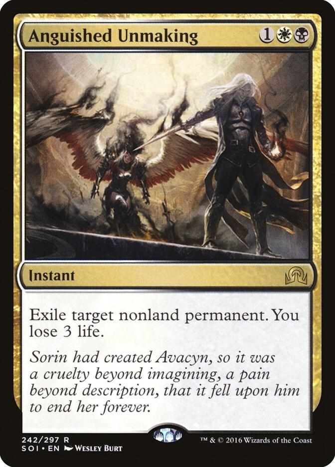
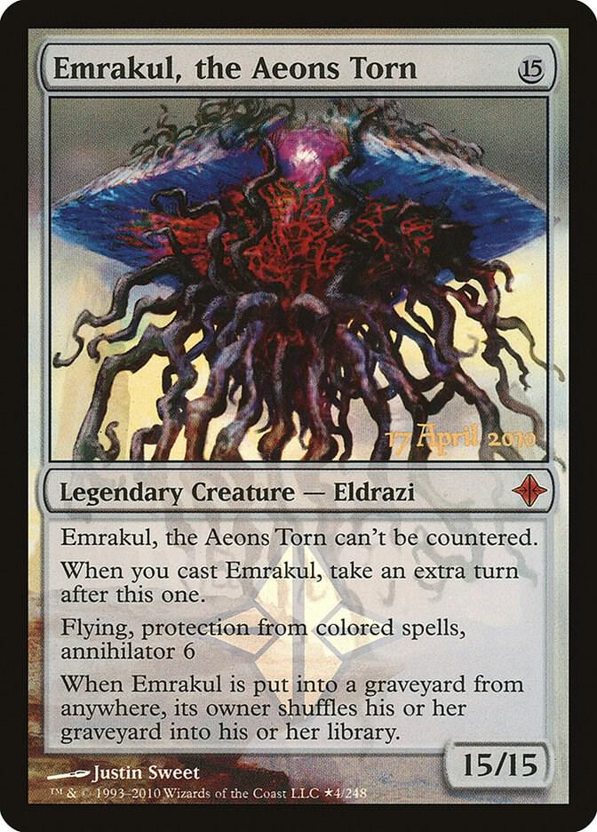
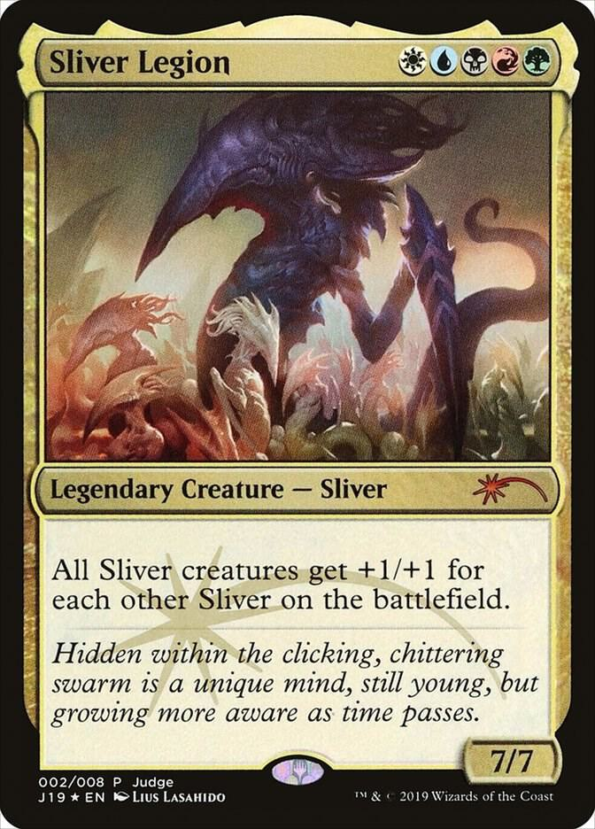

I made this website to showcase some of my favorite pieces of MTG lore.
This page will also act as my credentials proving I am in fact a nerd.

I like this card because of the lore it represents. The vampire named Sorin Markov created the angel Avacyn
to protect the balance of the world of Innistrad. He knew that if left unchecked, his kin would hunt the humans
to extinction. Avacyn kept this balance for a long time while Sorin was away from the world until one day the Titan
Emrakul arrived and corrupted her. She became a threat to all of Innistrad, and so Sorin was forced to return and destroy
his own creation. This card is also, in my opinion, just a really good card without being completely broken like other cards.

Speaking of Emrakul, this is the first printed version of Emrakul. Emrakul is a kind of Eldrich force of nature. It is one of
three Eldrazi Titans and by far the strongest. It goes to different "planes" and spreads it corruption throughout the world.
I actually have a love-hate relationship with this card because I never actually used it or even had it but my friend that did
use it, just won every time he managed to get Emrakul out on the field. You can't stop it from entering the field once he has
been cast, you get to take another turn after you play it, and whenever it attacks your opponent has to get rid of 6 of their
cards currently on their side of the field. But all that being said, I love the actual lore behind this creature.

This is Sliver Legion, a card that is the backbone behind my absolute favorite deck archetype, slivers. Slivers are race of feral
creatures that act through a hivemind. They are very similar to the zerg from Starcraft but they dont spread to different worlds
easily unless brought there by an outside force. These are by far my favorite creatures in the game and story and even though I
have been told otherwise my whole life, I believe they would win in a fight against the Eldrazi.
Here is my favorite MTG related video
This is a really good video showcasing Liliana Vess fighting against the Planeswalker dragon Nicol Bolas. I love the animation and
the cover of this Linkin Park song. Just a great video and I watch it all the time.